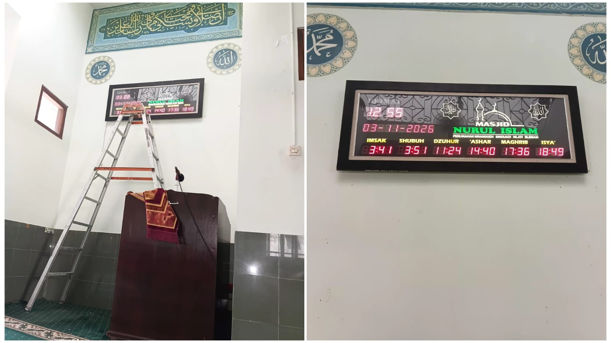

SLEMAN — Sabana LED kembali dipercaya untuk melakukan instalasi perangkat penunjuk waktu ibadah di rumah ibadah. Kali ini, tim sukses merampungkan pemasangan Jam Digital Masjid Nurul Islam yang berlokasi di wilayah Sinduadi, Mlati, Sleman, Yogyakarta.
Pemasangan dilakukan dengan presisi tinggi di dinding utama interior masjid. Perangkat jam digital ini dilengkapi dengan jadwal sholat otomatis yang akurat sesuai koordinat wilayah, serta custom teks identitas masjid (*Masjid Nurul Islam*) yang memperindah suasana ruangan.
Dengan terpasangnya jam digital ini, jamaah dapat lebih mudah memantau masuknya waktu sholat dengan akurat sekaligus menambah kekhusyukan dalam beribadah di Masjid Nurul Islam.